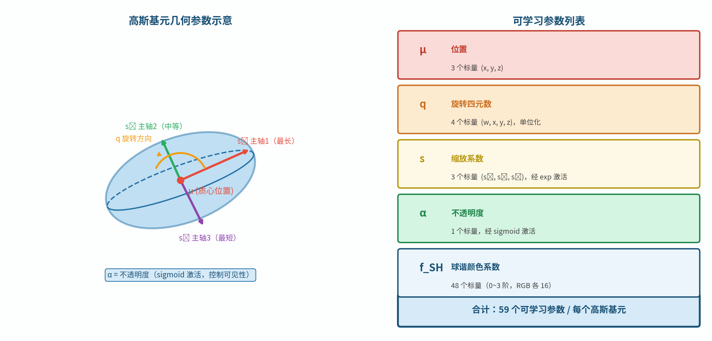
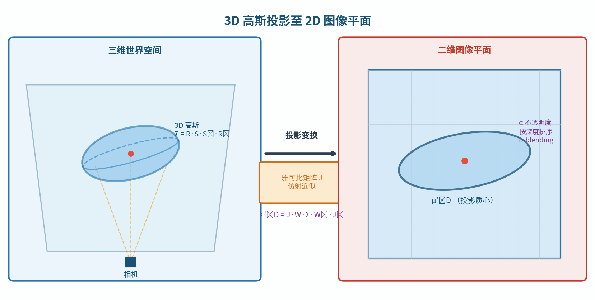
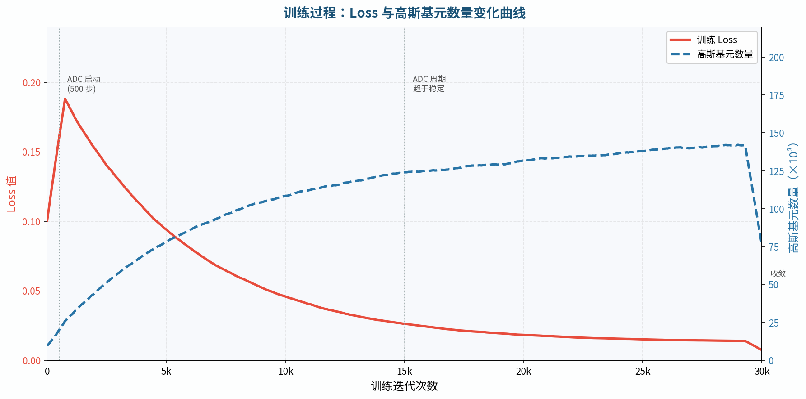

第六章：3DGS 核心算法详解
3DGS 的全貌：从初始化到训练到渲染，每个环节都拆开讲清楚。
6.1 整体架构一览
3DGS 的训练流程是一个迭代优化过程，整体可以分为以下几个阶段：
多视角图像
│
▼ COLMAP SfM
相机位姿 + 稀疏点云
│
▼ 初始化
数百万个三维高斯基元（初始位置来自点云）
│
▼ 迭代训练（30,000步）
│ ┌─────────────────────────────────────────────┐
│ │ 1. 随机选取一张训练视角图像 │
│ │ 2. 前向渲染（投影 + 排序 + Alpha合成） │
│ │ 3. 计算损失 L = L1 + λ·L_SSIM │
│ │ 4. 反向传播，计算所有高斯参数的梯度 │
│ │ 5. Adam 优化器更新参数 │
│ │ 6. 每100步：自适应密度控制（ADC） │
│ └─────────────────────────────────────────────┘
│
▼ 输出
已训练的高斯场景（.ply文件），可实时渲染

关键数字（Mip-NeRF 360 数据集上的典型值）：
指标 |
数值 |
|---|---|
训练时间（RTX 3090） |
~35分钟 |
最终高斯数量 |
300-600万 |
场景文件大小（.ply） |
300-800 MB |
渲染速度（1080p） |
100-150 FPS |
PSNR（室内场景） |
~31 dB |
思考题：3DGS 是"有监督学习"还是"无监督学习"？监督信号是什么？
6.2 高斯基元的完整参数定义
每个高斯基元存储以下可学习参数：
参数 |
维度 |
含义 |
激活函数 |
|---|---|---|---|
位置 $\boldsymbol{\mu}$ |
3 |
高斯中心在世界坐标系的位置 |
无 |
旋转（四元数）$q$ |
4 |
高斯椭球的朝向 |
归一化 |
缩放 $\mathbf{s}$ |
3 |
三个主轴长度（对数存储） |
$\exp$ |
不透明度 $o$ |
1 |
渲染时的基础不透明度 |
sigmoid |
球谐系数 $\mathbf{f}$ |
$16\times3$ |
RGB三通道的视角相关颜色 |
无（结果用sigmoid） |
总参数量： $3+4+3+1+48 = 59$ 个标量/高斯
设有 $N = 300$ 万个高斯：
$$300 \times 10^4 \times 59 \times 4\ \text{字节} \approx 708\ \text{MB}$$
这就是一个典型3DGS场景的存储需求，比NeRF（通常<50MB）大得多。这也是压缩方向（第9章）如此活跃的原因。

协方差矩阵的重建：
优化过程中存储四元数 $q$ 和缩放 $\mathbf{s}$，渲染时需要重建协方差矩阵：
$$\Sigma = R \cdot \text{diag}(s_x^2, s_y^2, s_z^2) \cdot R^T$$
其中 $R$ 由四元数 $q$ 计算得到（详见第3章公式）。
思考题：3DGS的高斯基元参数在GPU上存储为什么格式？（提示：PyTorch的nn.Parameter，连续存储，利于CUDA并行读取）
6.3 三维高斯投影到二维
这是3DGS的关键数学步骤：将三维高斯椭球投影到相机图像平面，得到二维高斯椭圆。
仿射近似（Affine Approximation）
透视投影本身是非线性的（存在除以深度 $Z$ 的操作），但在局部范围内可以用**一阶泰勒展开（雅可比近似）**线性化：
$$\mathbf{x} = \pi(\mathbf{X}) \approx \pi(\boldsymbol{\mu}) + J(\mathbf{X} - \boldsymbol{\mu})$$
其中 $J$ 是投影函数 $\pi$ 在高斯中心 $\boldsymbol{\mu}$ 处的雅可比矩阵。
对于针孔相机，相机坐标系下的点 $(X, Y, Z)$ 投影到图像坐标 $(x, y)$ 的雅可比为：
$$J = \begin{bmatrix} \frac{f_x}{Z} & 0 & -\frac{f_x X}{Z^2} \ 0 & \frac{f_y}{Z} & -\frac{f_y Y}{Z^2} \end{bmatrix} \in \mathbb{R}^{2\times3}$$
二维协方差计算
设世界坐标系下的三维协方差为 $\Sigma_W$，相机外参旋转为 $W$（$3\times3$），则二维投影协方差：
$$\Sigma' = J W \Sigma_W W^T J^T \in \mathbb{R}^{2\times2}$$
这是一个 $2\times3 \cdot 3\times3 \cdot 3\times3 \cdot 3\times3 \cdot 3\times2$ 的矩阵运算，结果是 $2\times2$ 的对称矩阵，完全确定了屏幕上二维高斯椭圆的形状。
二维高斯椭圆的渲染
对屏幕上的像素 $\mathbf{p} = (u, v)$，高斯基元的贡献（"影响力"）：
$$\alpha(\mathbf{p}) = o \cdot \exp!\left(-\frac{1}{2}(\mathbf{p} - \boldsymbol{\mu}')^T (\Sigma')^{-1} (\mathbf{p} - \boldsymbol{\mu}')\right)$$
对 $2\times2$ 矩阵求逆：$(\Sigma')^{-1} = \frac{1}{\det(\Sigma')} \begin{bmatrix} \Sigma'{22} & -\Sigma'{12} \ -\Sigma'{12} & \Sigma'{11} \end{bmatrix}$，计算量极小。
实践中的优化： 只渲染 $\alpha > \epsilon$（如 $10^{-3}$）的像素，用高斯的边界包围盒裁剪，大量减少无效计算。

思考题：雅可比近似在高斯基元很大（覆盖大片视野）时会失效，因为透视变形不再是线性的。3DGS如何处理这种情况？（提示：大高斯会被ADC分裂）
6.4 Tile-based 光栅化
3DGS 的核心性能来自于专门设计的 Tile-based CUDA 光栅化器。
预处理阶段
投影：将所有高斯的三维中心投影到屏幕，计算每个高斯的屏幕包围盒
Tile分配：将屏幕分成 $16\times16$ 像素的 tile，为每个高斯找出它覆盖的所有 tile
生成排序键：每个（高斯, tile）对生成一个64位排序键 =
(tile_id << 32 | depth_uint32)Radix Sort：对所有（高斯, tile）对按排序键做GPU基数排序，得到每个 tile 内按深度排列的高斯列表
Radix Sort 的效率： 时间复杂度 $O(N \cdot b/w)$，其中 $b$ 是位宽（64位），$w$ 是每次处理的位数（通常8位）。对数百万高斯，GPU上只需几毫秒。
前向渲染阶段
每个 tile 对应一个 CUDA 线程块（$16\times16 = 256$ 个线程，每线程处理一个像素）。线程块内：
从全局内存加载属于该 tile 的高斯列表（利用共享内存批量加载，减少全局内存访问）
每个像素按深度顺序 Alpha 合成，维护：
当前累积颜色 $C$
当前透射率 $T$（初始=1）
终止条件：当 $T < 0.0001$ 时停止（当前像素已几乎不透明）
反向传播
反向传播的挑战：Alpha 合成是从前到后的，但反向传播需要从后到前（需要知道后面的 $T$ 值）。
解决方案：从后向前扫描（Backward Pass Reverse Scan），或在前向时缓存每个像素最后存活的高斯 ID，从那里向前反推梯度。

思考题：为什么共享内存（Shared Memory）比全局显存（Global Memory）快这么多？（提示：延迟差距约100倍。思考L1 Cache和主存的类比）
6.5 自适应密度控制（ADC）
每训练 100步，系统执行一次自适应密度控制（Adaptive Density Control，ADC），动态调整高斯的数量和分布。
位置梯度统计
训练过程中，记录每个高斯的屏幕空间位置梯度均值：
$$\bar{g}k = \frac{1}{T} \sum{t=1}^{T} \left|\frac{\partial \mathcal{L}}{\partial \boldsymbol{\mu}_k'}\right|$$
位置梯度大 = 该高斯所在区域细节不够，需要更多基元来覆盖。
三种操作
克隆（Clone）：适用于小高斯（$\max(s_x, s_y, s_z) < \tau_s$）且梯度大的情况。
场景：欠重建区域，高斯太少
操作：复制一个相同的高斯，两个高斯沿位置梯度方向稍微分开
效果：该区域高斯密度增加，细节得到改善
分裂（Split）：适用于大高斯（$\max(s_x, s_y, s_z) \geq \tau_s$）且梯度大的情况。
场景：一个高斯过大，试图覆盖多个不同外观的区域
操作：删除原高斯，在原高斯内部随机生成2个新的更小高斯
效果：原来一个"大模糊球"分成两个"小精确球"
剪枝（Prune）：满足任一条件就删除：
不透明度 $o < \tau_\alpha$（几乎透明，无贡献）
高斯的屏幕投影面积过大（超出场景范围的"幽灵"高斯）
不透明度重置（Opacity Reset）：每隔约 3000 步，将所有高斯的不透明度重置为接近0的小值。这迫使真正有用的高斯重新"证明自己"，并给低不透明度高斯一个被剪枝的机会，防止高斯数量无限增长。

典型高斯数量变化：
初始（来自SfM点云）：~10-20万个高斯
7,000步时：约 80-150万
30,000步时：约 200-600万
思考题：为什么不直接从一开始就用600万个高斯，而是要从少量高斯开始，逐步增加密度？（提示：思考初始化质量和优化稳定性）
6.6 损失函数设计
3DGS 的训练损失由两项组成：
$$\mathcal{L} = (1 - \lambda) \mathcal{L}1 + \lambda \mathcal{L}\text{D-SSIM}$$
其中默认 $\lambda = 0.2$。
L1 损失
$$\mathcal{L}1 = \frac{1}{HW} \sum{i,j} |\hat{I}{ij} - I{ij}|$$
逐像素绝对误差。优点：对每个像素平等对待，训练稳定；缺点：对整体结构感知差（见第1章指标讨论）。
D-SSIM 损失
D-SSIM = 1 - SSIM，范围 $[0,1]$，越小越好。
$$\mathcal{L}_\text{D-SSIM} = 1 - \text{SSIM}(\hat{I}, I)$$
SSIM 考虑局部 patch 内的亮度、对比度、结构，对于恢复清晰的边缘和纹理有帮助，是 L1 的有效补充。
0.2 的权重选择：原论文通过实验选定，D-SSIM权重过高会导致训练不稳定，过低则结构细节恢复不足。
为什么不用 LPIPS？ LPIPS 是用神经网络计算的，前向+反向开销很大，在需要快速训练的3DGS中代价太高。L1 + D-SSIM 是性能与质量的工程平衡。

思考题：对于一张有强高光（specular highlight）的图像，L1损失会给高光区域分配怎样的梯度？这会影响高斯的球谐系数如何更新？
6.7 训练超参数解读
3DGS 使用 Adam 优化器，不同参数有不同的学习率：
参数 |
初始学习率 |
调度方式 |
终止学习率 |
|---|---|---|---|
位置 $\boldsymbol{\mu}$ |
$1.6\times10^{-4}$ |
指数衰减至 $1.6\times10^{-6}$ |
低 |
旋转 $q$ |
$1\times10^{-3}$ |
常数 |
常数 |
缩放 $\mathbf{s}$ |
$5\times10^{-3}$ |
常数 |
常数 |
不透明度 $o$ |
$5\times10^{-2}$ |
常数 |
常数 |
球谐系数 $\mathbf{f}$ |
$2.5\times10^{-3}$ |
常数 |
常数 |
位置学习率指数衰减的原因：
训练初期，高斯位置变化剧烈（需要从初始点云向正确位置移动）；后期，高斯已大致到位，需要精细调整，过大的学习率会导致震荡。指数衰减让训练从"粗定位"过渡到"精细调整"。
关键训练节点：
迭代步数 |
发生的事 |
|---|---|
0 |
从SfM点云初始化所有高斯（位置+默认参数） |
1~999 |
只训练颜色（$l=1$球谐），固定位置和形状，让颜色先收敛 |
1000+ |
开始优化所有参数；每100步ADC |
3000, 6000, 9000 |
Opacity Reset |
7000 |
保存一次中间检查点 |
30000 |
训练结束，保存最终模型 |
思考题：为什么训练初期（前1000步）要固定位置和形状，只训练颜色？这样的课程训练（Curriculum Learning）有什么好处？
本章小结
3DGS 整体流程：SfM点云初始化 → 迭代训练（渲染+loss+反向传播+ADC） → 输出高斯场景
每个高斯有 59 个参数（位置3、旋转4、缩放3、不透明度1、球谐系数48），数百万高斯存储约数百MB
投影：$\Sigma' = JW\Sigma W^T J^T$，三维椭球变二维椭圆，解析计算无采样
Tile-based 光栅化：16×16 tile + GPU Radix Sort + 共享内存批量处理，是实时性能的关键
ADC：克隆（小高斯+梯度大）、分裂（大高斯+梯度大）、剪枝（低不透明度），动态调整高斯分布
损失：$(1-0.2)\mathcal{L}1 + 0.2\mathcal{L}\text{D-SSIM}$，Adam优化器，位置学习率指数衰减
推荐阅读
Kerbl et al., "3D Gaussian Splatting for Real-Time Radiance Field Rendering", SIGGRAPH 2023（原始论文，必读）
官方仓库
gaussian_renderer/__init__.py（前向渲染实现）submodules/diff-gaussian-rasterization/cuda_rasterizer/（CUDA光栅化核心代码）Lassner & Zollhöfer, "Pulsar: Efficient Sphere-based Neural Rendering", CVPR 2021（类似思路的早期工作）
上一章：第五章：体渲染与 Alpha 合成 | 下一章：第七章：从原始论文到开源代码